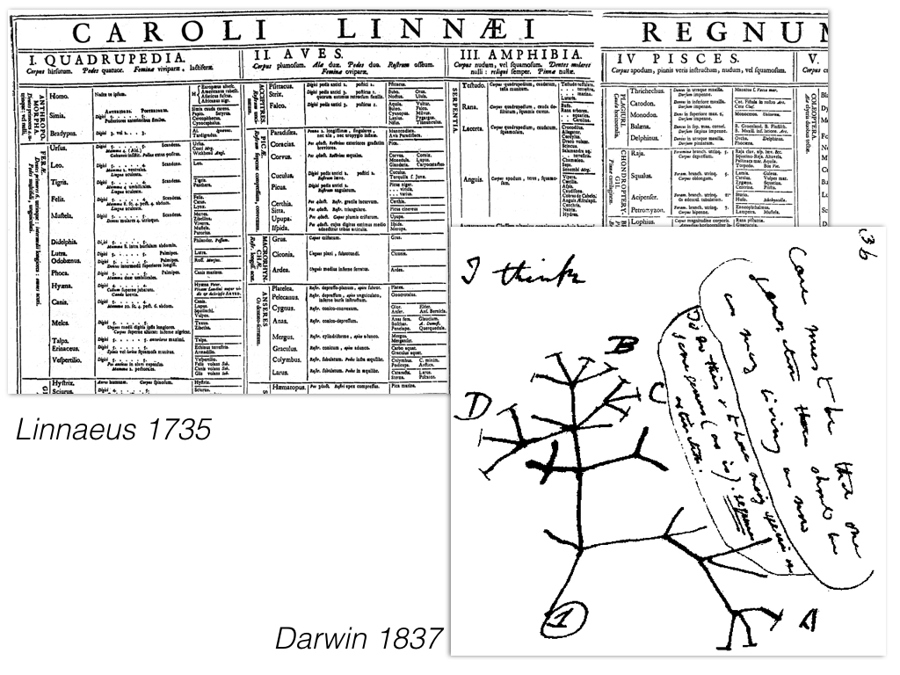
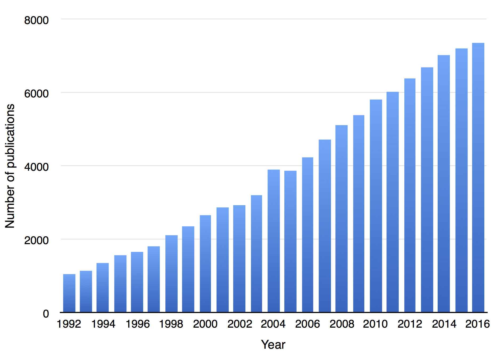
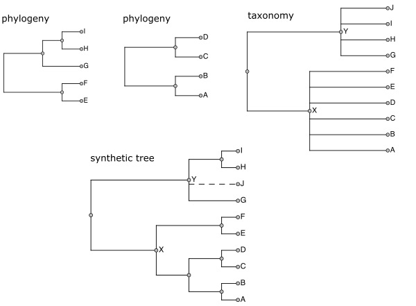
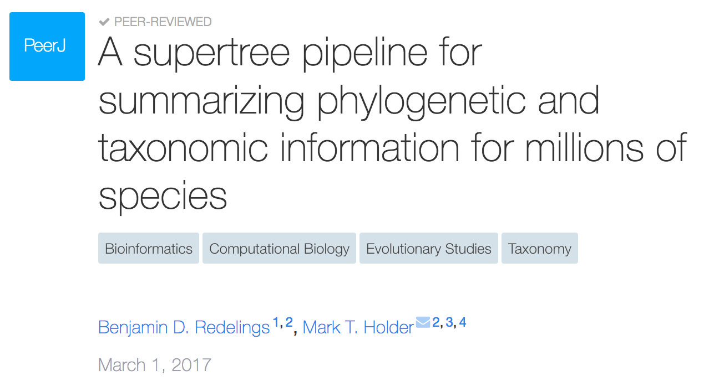
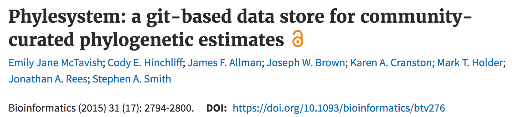
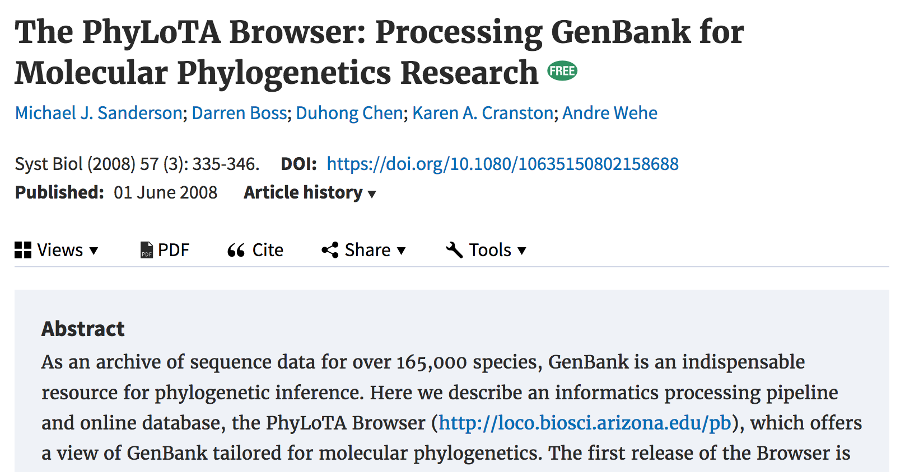
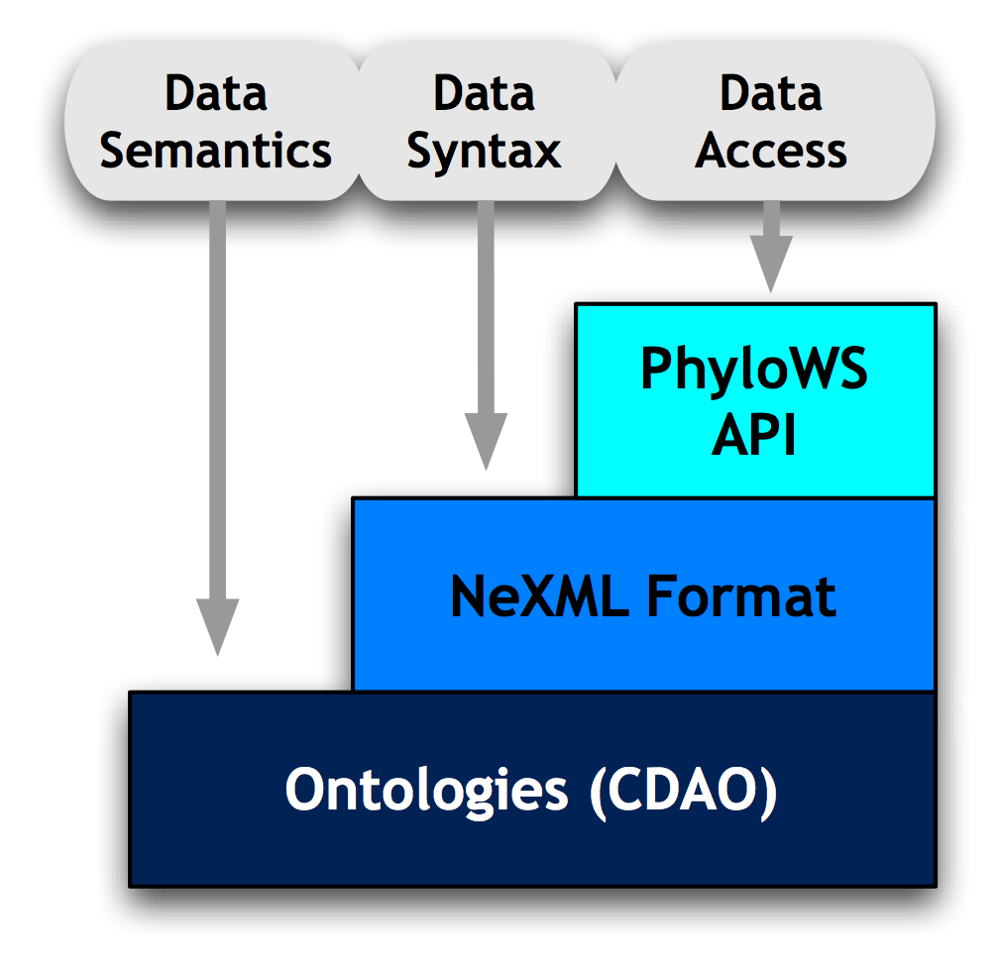
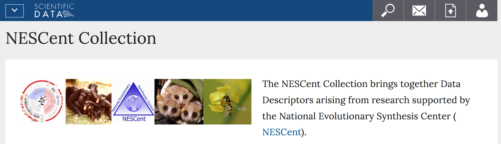
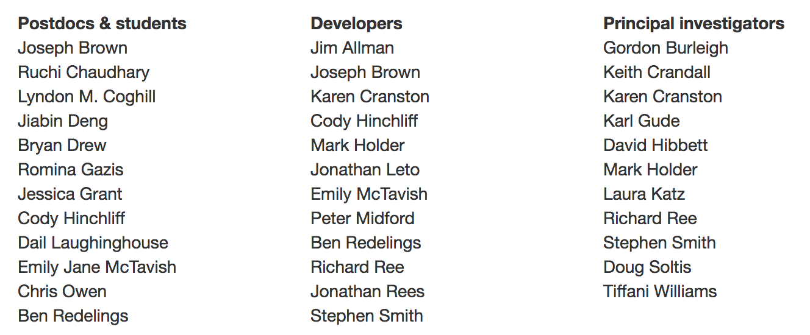

Community-driven synthesis of evolutionary trees
Karen Cranston | Duke University | @kcranstn

Phylogeny provides a mechanism through which to interpret the patterns and processes of evolution and to predict the responses of life to rapid environmental change. Phylogenies and phylogenetic methods are now being used to enhance agriculture, identify and combat diseases, conserve biodiversity, and predict responses to global climate change and to biological invasions.

(title = phylogen*) or (topic = phylogeny)
Summarize existing phylogenetic knowledge into a tree of life that is:
1. Complete
2. Online
3. Constantly updated



https://tree.opentreeoflife.org

- 8267 trees from 3748 studies
- 7035 commits from 163 curators (136 external)
- git backend + python API + curation application
 |
rotl wraps OpenTree APIs |
| provides trees given species | |
 |
comparative analyses |
| tree visualization |

NESCent Hackathon series

- Developed standards
- Wrote tools
- Taught skills
- Built community



- Summarize published phylogenies into a tree of life
- Motivate community curation and feedback
- Provide open phylogeny, taxonomy data for downstream use
- Build on previous work in evolutionary synthesis
